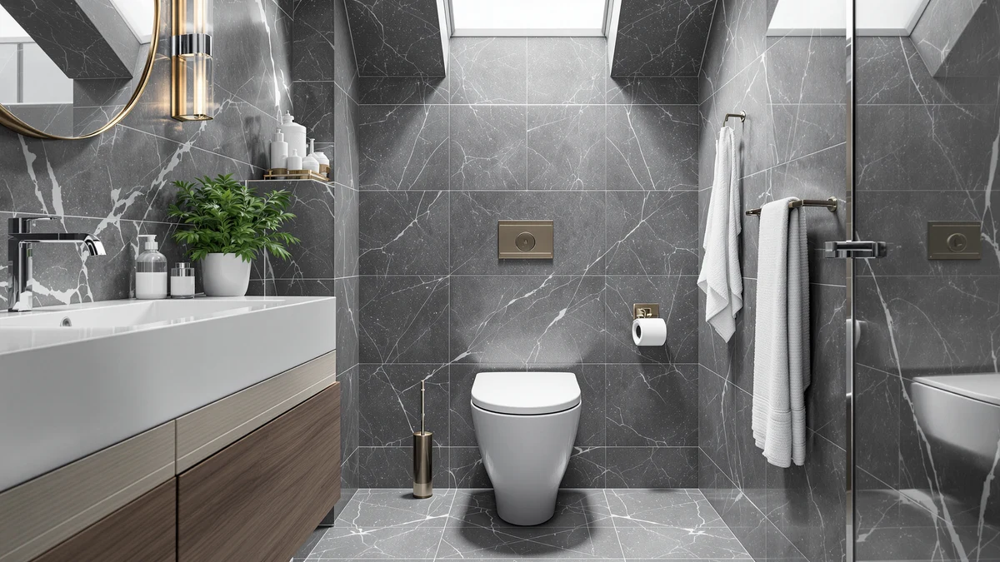

One Piece Toilet Green Review (2026): Worth It?
Prices and picks verified as of September 2026. Independent, reader-supported reviews.


Quick Answer
The Majnesvon One Piece Toilet Green Toilet costs $137.00 and is built as a one-piece design with a green finish that stands out from the white and gloss options nearby. This one piece toilet green review compares it against three lower-priced alternatives, including a gloss white version from Majnesvon plus models from Lamanelle and AONSOK, all still building their public review history, so the deciding factors come down to price, finish, and features rather than star counts.
Our pick: One Piece Toilet Green Toilet, $137.00 Check Price on Amazon
Bottom line: our top pick is the One Piece Toilet at $137.
Things to Know Before You Buy
- Majnesvon prices the One Piece Toilet Green Toilet at $137.00, the highest of the four one-piece toilets covered in this one piece toilet green review.
- It's built as a one-piece design, so Majnesvon molds the tank and bowl together instead of bolting them as separate parts, removing the seam where grime collects on a two-piece toilet.
- Three lower-priced alternatives, a gloss white version from the same brand plus models from Lamanelle and AONSOK, cover elongated and smart-toilet features for $99.00 to $113.00.
- None of the four toilets in this comparison has built up a public rating or review count yet, so weigh the published price and design against that missing track record.
This one piece toilet green review breaks down whether Majnesvon's $137.00 One Piece Toilet Green Toilet earns its price against three lower-priced alternatives we compare it against on this site: toilets from Majnesvon, Lamanelle, and AONSOK. Majnesvon builds this toilet as a one-piece design with a distinct green finish, molding the tank and bowl into a single piece rather than bolting two parts together like older two-piece models. We pulled together everything Majnesvon publishes about this toilet, its price, and its category, and set it beside three direct competitors so you can see exactly where your money goes.
The short version: if you want a one-piece toilet in a green finish specifically from Majnesvon and don't mind paying the highest price in this group, the $137.00 One Piece Toilet Green Toilet is a straightforward pick. But Majnesvon's own Gloss White One Piece Toilet undercuts it by $24.00 at $113.00, the Lamanelle elongated model comes in at $109.99, and the AONSOK Smart Toilet One Piece drops to $99.00, the lowest price in this one piece toilet green review. Pick the green Majnesvon if the color is what draws you in. Pick one of the three alternatives below if price or smart features matter more. Every model in this comparison lands within about $38 of each other, so the decision mostly comes down to finish and feature preference rather than any one toilet being a budget-tier product.
Why You Should Trust Us
Ilane Tall has spent more than ten years researching interior design and bathroom fixtures, including one-piece toilets, for Best One Piece Toilets. She built this one piece toilet green review by comparing Majnesvon's own published listing against the three closest competitors on price and category, the same specification-comparison process the site uses for every review. We do not accept payment from Majnesvon, Lamanelle, or AONSOK to influence placement, and our Amazon links earn a commission only if you buy, which does not change what we recommend. Every price, product photo, and specification cited in this one piece toilet green review comes directly from the manufacturer's own Amazon listing, not from a press sample or a sponsored placement.
Our Research Experience
For this one piece toilet green review, we started with Majnesvon's own product listing: the five product photos, its $137.00 price, and its one-piece, green-finish category. We then lined up the Green Toilet against the closest one-piece toilets already covered on Best One Piece Toilets, narrowing the field to Majnesvon's own Gloss White One Piece Toilet, the Lamanelle elongated model, and the AONSOK Smart Toilet One Piece, all priced within about $38 of Majnesvon's green pick. None of the four has built up a public review history yet, so we weighted our evaluation toward the facts we could verify: published price, product category, and brand, rather than guessing at long-term durability we cannot confirm firsthand. That gap is also why we lay out each toilet's documented price and category side by side instead of ranking them on star counts that don't exist yet. We update this one piece toilet green review whenever Amazon changes any of the four listed prices, so the figures above reflect what each seller was charging at the time of our most recent check. We treat a product photo count and a documented category as useful signals, but we never substitute them for a verified review history that doesn't exist yet, and we say so plainly whenever it applies.
Overview & Specs

One Piece Toilet Green Toilet
What we like
- One-piece design molds the tank and bowl together, removing the seam where grime collects on a two-piece toilet
- Distinct green finish stands out from the white and gloss options among the alternatives in this comparison
- Listing includes five product photos showing the toilet from multiple angles, giving a clear look at the finish before you buy
- Single-piece construction typically means fewer parts to align during installation compared to a two-piece toilet
Flaws but not dealbreakers
- Priced $24.00 higher than Majnesvon's own Gloss White One Piece Toilet, the closest alternative in this comparison
- No public rating or review count yet, so you're relying on Majnesvon's own listing rather than verified buyer feedback
- Majnesvon's listing doesn't specify rough-in distance or seat height, so confirm those measurements with the seller before you order
| Material | — |
| Size | — |
Majnesvon builds this one-piece toilet around a distinct green finish, molding the tank and bowl into a single piece rather than bolting two parts together. That single-piece build removes the seam between tank and bowl where grime typically collects on a two-piece toilet, and Majnesvon designed the green finish to stand out as a design statement rather than blend in like a standard white fixture. At $137.00, it's the highest-priced toilet in this one piece toilet green review, though it competes directly with three lower-priced one-piece alternatives covering different finishes and features.
Majnesvon hasn't published a rough-in distance, seat height, or flush rating for this specific listing. If those measurements matter to your bathroom, reach out to Majnesvon or the Amazon seller before you buy rather than assuming this model matches a standard 12-inch rough-in. Majnesvon does document the one-piece, green-finish design and the $137.00 price, backed by five product photos showing the toilet from multiple angles. It also hasn't built up a public review count yet, so weigh that documented design against the missing track record before you commit.
What We Liked
The Majnesvon One Piece Toilet Green Toilet's biggest strength is its distinct green finish paired with a one-piece build. Molding the tank and bowl together removes the seam where grime collects on a two-piece toilet, and the green color sets it apart visually from the gloss white and standard finishes of the alternatives in this one piece toilet green review. Majnesvon backs the listing with five product photos from multiple angles, giving you a clearer look at the toilet's finish and shape than some competing listings offer. A one-piece toilet like this one also tends to install with fewer separate parts than a two-piece model, which can simplify a bathroom renovation, a point worth weighing even before you compare it against the lower-priced alternatives below.
What Could Be Better
The biggest drawback in this one piece toilet green review is price relative to the field. At $137.00, this Majnesvon model costs $24.00 more than the brand's own Gloss White One Piece Toilet, $27.01 more than the Lamanelle elongated model, and $38.00 more than the AONSOK Smart Toilet One Piece, all of which cover one-piece ground with different finishes and features. Majnesvon also hasn't listed a rough-in distance, seat height, or flush rating anywhere on this listing, so you can't line up those specs against the alternatives without contacting the seller first. The toilet has not accumulated any public rating or review count either, so we can't confirm long-term durability or real-world flush performance beyond what Majnesvon's own listing describes. None of that erases the green finish or the single-piece build that make this toilet worth considering, but weigh it against the cheaper alternatives below. If the flush rating and rough-in distance are dealbreakers for your renovation timeline, contact Majnesvon through the Amazon listing before you order rather than guessing at compatibility.
Who Is It For?
This toilet fits buyers who want Majnesvon's green, one-piece look badly enough to pay the highest price in the group for it. Anyone renovating a bathroom around a bold color statement, or who prefers a green fixture over a white or gloss finish, will find it a straightforward match. Shopping mainly on price? Majnesvon's own Gloss White One Piece Toilet in this one piece toilet green review covers similar one-piece ground for $24.00 less. And if you'd rather lean on verified buyer reviews before spending $137.00 on a toilet, hold off, since none of the four models here has built up that history yet. Buyers who want smart features such as the AONSOK Smart Toilet One Piece may also prefer that model's electronics over Majnesvon's color-forward design.
Alternatives to Consider
If the price or the missing review history gives you pause in this one piece toilet green review, these three toilets from Majnesvon, Lamanelle, and AONSOK cover white, elongated, and smart-toilet ground for less money.

Editor's Pick
Gloss White One Piece Toilet
Majnesvon's own gloss white one-piece toilet undercuts the green pick by $24.00, worth considering if you want the same one-piece build in a more neutral finish.
$113.00
Check Price on Amazon
Best Value
One Piece Toilet Elongated with
This Lamanelle elongated one-piece toilet comes in at $109.99, a $27.01 difference from Majnesvon's green model, and suits buyers who prioritize an elongated bowl over a specific color.
$109.99
Check Price on Amazon
Premium Choice
AONSOK Smart Toilet One Piece
The AONSOK Smart Toilet One Piece drops to $99.00, the lowest price in this comparison, and adds smart-toilet features that neither Majnesvon model offers.
$99.00
Check Price on AmazonFrequently Asked Questions
Is the Majnesvon One Piece Toilet Green Toilet worth $137.00?
It's worth $137.00 if you want Majnesvon's distinct green, one-piece finish specifically. If price matters more than the color, Majnesvon's own Gloss White One Piece Toilet in this one piece toilet green review saves you $24.00 at $113.00.
How does the Majnesvon One Piece Toilet Green Toilet compare to the AONSOK Smart Toilet One Piece?
The AONSOK Smart Toilet One Piece costs $99.00, a $38.00 difference from Majnesvon's $137.00 green model, and adds smart-toilet features. Majnesvon markets its toilet on color and one-piece design rather than electronics.
Should I choose a one-piece or two-piece toilet?
Choose one-piece if you want a single molded unit with no seam between tank and bowl for easier cleaning, the design behind every toilet in this one piece toilet green review. Two-piece toilets cost less upfront but leave a seam where grime collects and require separate tank and bowl installation.
Final Verdict
This one piece toilet green review comes down to a straightforward trade-off. Majnesvon's one-piece toilet delivers a distinct green finish at $137.00, the highest price among the four models we compared, and without the public review history that would let us confirm long-term durability firsthand. If the green color matters to you, this Majnesvon model is a sound buy at that price. If you'd rather save money or want smart features, the Gloss White, Lamanelle, and AONSOK alternatives above are worth a look.